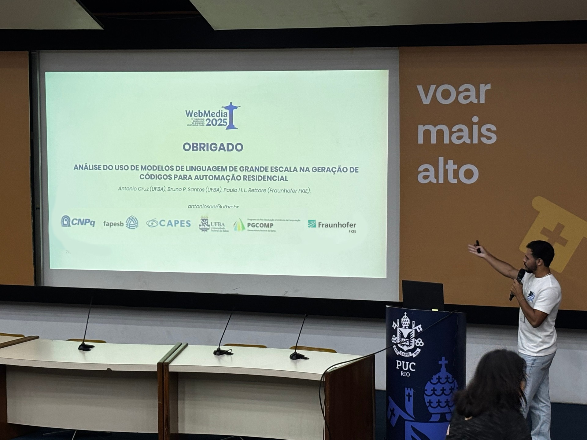
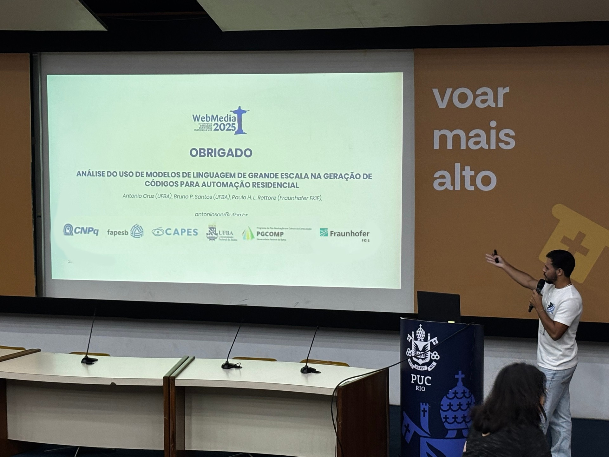

Novembro de 2025 - WebMedia 2025
Novembro 2025Durante o WebMedia 2025 - 31º Simpósio Brasileiro de Sistemas Multimídia e Web, realizado na PUC-Rio no Rio de Janeiro, foi apresentado o trabalho intitulado "Análise do uso de Modelos de Linguagem de Grande Escala na Geração de Códigos para Automação Residencial". O trabalho foi desenvolvido por Antonio Cruz (Universidade Federal da Bahia), Paulo H. L. Rettore (Universidade Federal de Minas Gerais) e Bruno P. Santos (Universidade Federal da Bahia). A apresentação abordou a aplicação de modelos de linguagem de grande escala (LLMs) na geração automatizada de códigos para sistemas de automação residencial, explorando as potencialidades e desafios dessa abordagem inovadora no contexto de ambientes inteligentes.
 

Dezembro de 2025 - SDS 2025
Dezembro 2025Durante a 12ª Conferência Internacional sobre Sistemas Definidos por Software (SDS 2025), realizada em Lyon, França, de 2 a 5 de dezembro de 2025, foram apresentados quatro artigos científicos desenvolvidos no âmbito do projeto SiR.AI. Os trabalhos aceitos abordam temas fundamentais para o avanço de sistemas resilientes e inteligentes, incluindo modelos de mobilidade realistas para testes de algoritmos e protocolos em IoT, criação de cenários realistas para aplicações de rede robustas, arquitetura modular para computação e visualização de métricas de mobilidade, e integração de inteligência artificial em simuladores de protocolos de rede. As apresentações contaram com a participação de pesquisadores das instituições parceiras do projeto, incluindo a Universidade Federal de Minas Gerais, Universidade Federal da Bahia, Instituto Fraunhofer FKIE e outras instituições colaboradoras internacionais.
Artigos apresentados:
- "Towards Realistic Testing of Algorithms and Protocols in IoT Through a Novel Mobility Model" - Leon Luca Lausberg, Paulo Rettore, Philipp Zißner, Sean Kloth, Edgar S. Oliveira, Clayson Celes, Peter Sevenich e Bruno Santos
- "Enabling the Design of Robust Network Applications by Creating Realistic Scenarios" - Edgar S. Oliveira, Paulo Rettore, Clayson Celes, Leon Luca Lausberg, Rodolfo Meneguette e Nils Aschenbruck
- "MobMetrics: A Modular Architecture for Computing and Visualizing Mobility Metrics" - Márcio Filho, Lucas Novais, Leon Luca Lausberg, Peter Sevenich, Paulo Rettore e Bruno Santos
- "SnapAI: a Simulator for Network Algorithms and Protocols with Artificial Intelligence integration" - João Vitor S. Coelho, Leon Luca Lausberg, Philipp Zißner, Peter Sevenich, Vinícius F. S. Mota, Cássio V. S. Prazeres, Paulo Rettore e Bruno Santos
Adicione fotos aqui
Substitua este espaço com imagens da apresentação